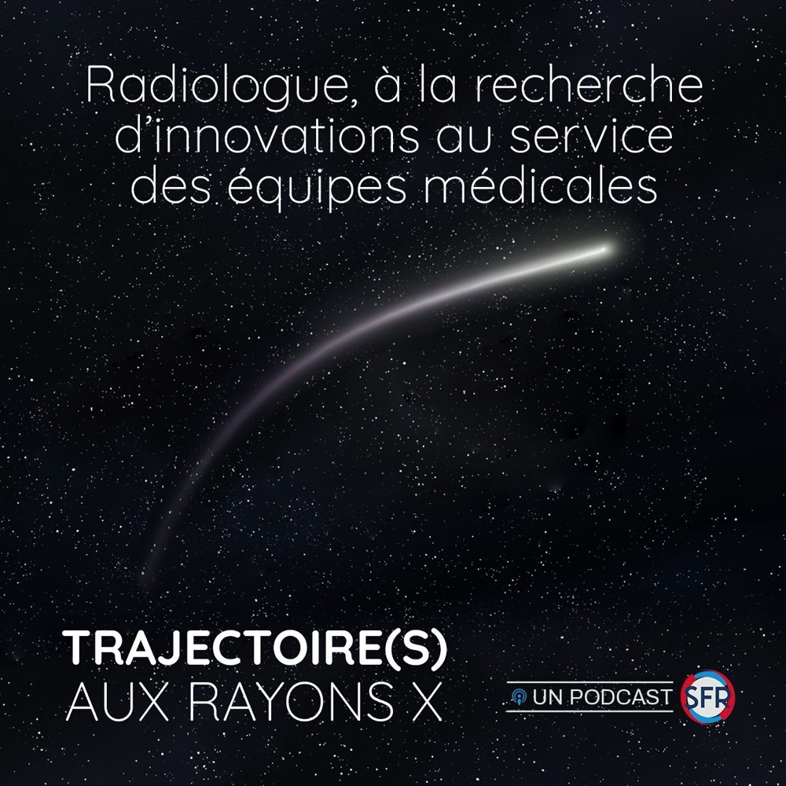

25 nov. 2025
SFR Junior · Saison 3 · Ép. 1
« Pr Vincent Vidal incarne une médecine innovante, accessible et humaine »
Épisode inaugural de la saison 3 de Trajectoire(s) aux rayons X (57 min), animée par Marie-Pauline Talabard et Thibault Agripnidis. Retour sur le parcours Marseille-Canada, la direction du LIIE et la trajectoire Emborrhoïd®, FairEmbo et EmboBio.